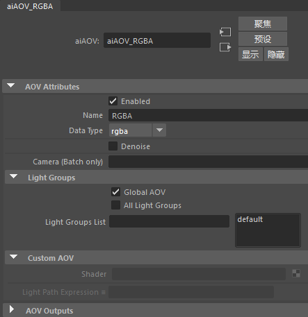
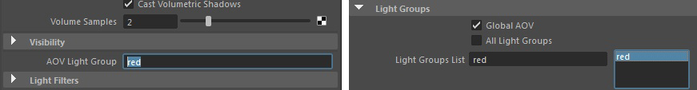
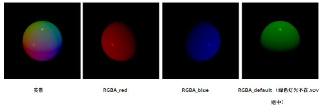
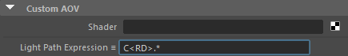
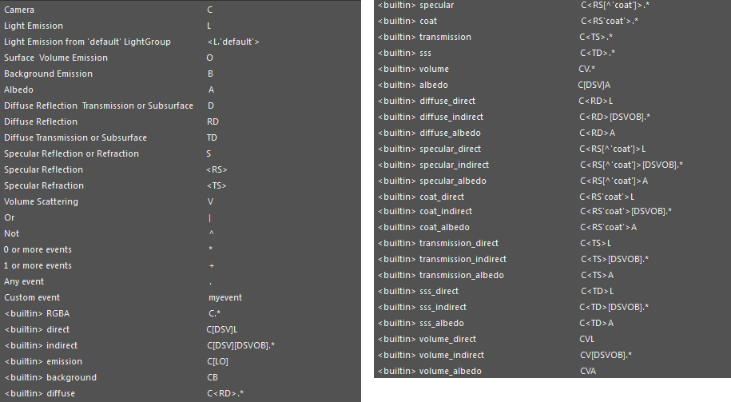
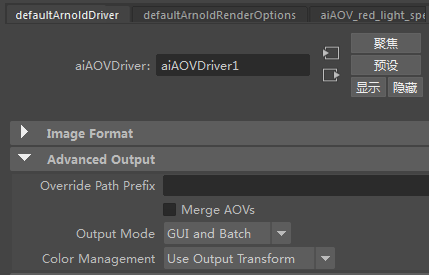

属性编辑器
 请参见《Arnold 用户手册》中的渲染设置
请参见《Arnold 用户手册》中的渲染设置

每个 AOV 都具有一个关联节点。您可以使用属性编辑器来查看这些节点的详细信息。
AOV 属性(AOV Attributes)
启用(Enabled)
仅当选中此属性时，AOV 才会写入磁盘（即使 AOV 位于活动列表中）。
名称(Name)
AOV 的名称 - 这将构成磁盘上的名称的一部分。最初，此属性只是取用 AOV 浏览器内显示的标准名称，但您可以根据需要更改名称（或许应该选择一个有助于区分 AOV 类型的名称）。请注意，您可以使用“前缀”(Prefix)属性为此名称添加前缀。
数据类型(Data Type)
要写入 AOV 的数据类型 - rgba、float、vector 等。Arnold 通常会为每个 AOV 指定一个默认类型，因此您不必显式地设置此属性。请注意，“节点行为”(Node Behavior)选项卡下的属性是场景中所有节点公用的标准 Maya 属性。
降噪(Denoise)
与 Optix 降噪器（“系统”(System)选项卡）配合使用。就像普通过滤器一样，此过滤器可应用于任何 AOV。
摄影机(仅批处理)(Camera (Batch only))
此选项可用于将特定的摄影机设置给某个 AOV。此选项只适用于批渲染。
灯光组(Light Groups)
当多个光源属于同一灯光组时，它们的贡献可分别写出到单独的 AOV。一个灯光组可以有多个灯光，但一个灯光只能属于一个灯光组。这个组由灯光的“AOV 灯光组”(AOV light group)参数定义。可用的灯光组将在对话框的右侧列出，您可以选择哪些灯光组由选定的 AOV 渲染。每个选定灯光组表示一个新的 AOV，以灯光组的名称作为后缀（例如，diffuse_direct_group01、specular_direct_group02、sss_default）。名为 default 的组包含不属于任何组的灯光（“AOV 灯光组”(AOV Light Group)参数为空）。

AOV 灯光组在灯光中命名为“red”（左）。在 AOV 中选中了“Red”灯光组（右）。
除了 <L.'groupname'> 语法之外，通过在 light.aov 参数中指定特定的 AOV 组，可以将任何内置或自定义 LPE 分割为多个 AOV，以输出一部分灯光。为此，必须在 options.outputs 中为 LPE AOV 名称添加后缀。
outputs "diffuse RGB filter driver" # all lights in one AOV
outputs "diffuse_* RGB filter driver" # output multiple AOVs, one for each light group
outputs "diffuse_groupname RGB filter driver" # only light in AOV group "groupname"
outputs "diffuse_default RGB filter driver" # only lights with no AOV group assigned 灯光组示例
在此示例中，一个球体被蓝色、红色和绿色三种灯光照亮。蓝色和红色灯光定义了不同的 AOV 灯光组，而绿色灯光不属于任何组。
“default”是由灯光照亮的美景 AOV，不在任何 AOV 灯光组中。“RGBA_default”+“RGBA_red”+“RGBA_blue”提供总的 RGBA 美景通道。

美景、RGBA_red、RGBA_blue、RGBA_default（绿色灯光不在 AOV 组中）
最多支持 16 个不同的灯光 AOV，不过给定 AOV 可以包含任意数量的灯光。
全局 AOV(Global AOV)
输出一个包含不属于任何组的灯光的美景 AOV。
所有灯光组(All Light Groups)
为场景中的每个灯光组输出一个 AOV。启用“所有灯光组”(All Light Groups)复选框后，将渲染每个灯光组。否则，将只渲染选定的灯光组。进行批渲染时，会使用不同通道输出同一个 EXR 文件中的所有内容，每个灯光组一个通道。
自定义 AOV(Custom AOV)
着色器
您可以通过 aov_write 着色器在自定义 AOV 中写入着色器的输出。
光线路径表达式
您可以使用以下方法定义自定义灯光路径表达式，以将照明组件写入单独的 AOV：
- 添加一个自定义 AOV，并确保已在“激活的 AOV”(Active AOVs)列表中选中它。
- 然后，您可以在属性编辑器中设置 LPE。

在属性编辑器的自定义 AOV 中设置了漫反射 LPE
要选择 LPE 的类型，请单击“灯光路径表达式”(Light Path Expression)右侧的图标。您将看到一个可用 AOV 的列表（及它们关联的 LPE）。

有关其他灯光路径表达式，请单击此处。
Arnold 驱动程序高级输出

覆盖路径前缀(Override Path Prefix)
覆盖 AOV 的 Maya 文件名前缀。
输出模式(Output Mode)
选择在渲染视图 (GUI)、批渲染还是在两者中查看 AOV。
颜色管理
这允许您设置特定的颜色空间来输出渲染的图像。默认情况下，8 位图像通过此属性（默认为 sRGB）应用视图变换，16/32 位图像应用输出变换（默认为“未经处理”(Raw)）。